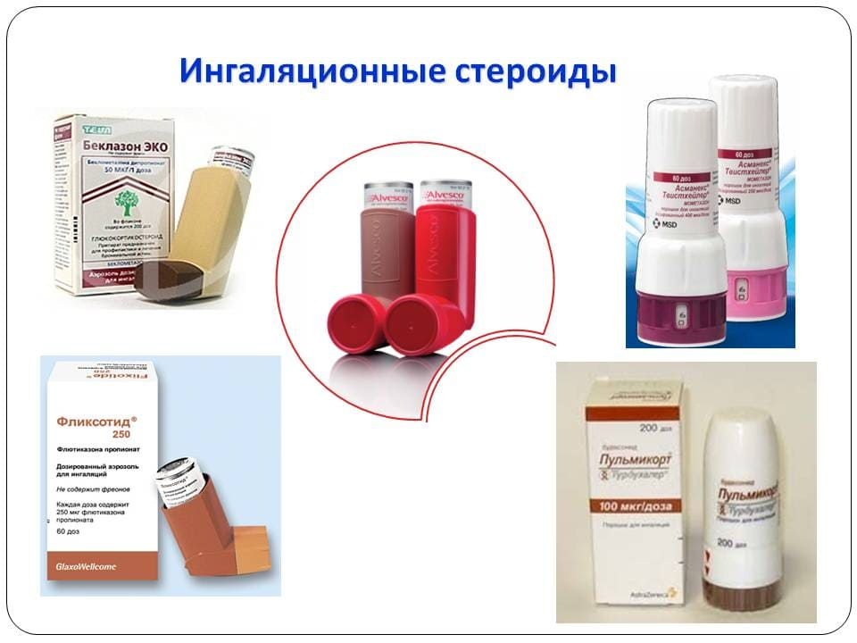
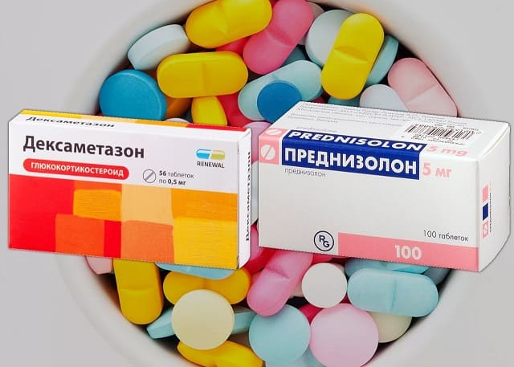
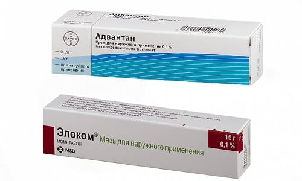
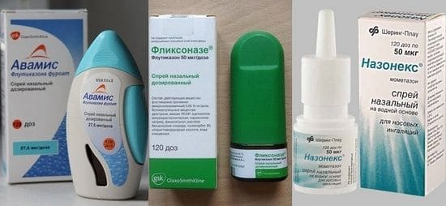

Иногда педиатру (как и многим другим врачам) требуется назначить ребенку препарат из группы глюкокортикостероидов (гормональный препарат).
Чаще всего это бывает необходимо при бронхиальной астме (ингаляционные стероиды типа Пульмикорта или Фликсотида,

изредка через рот или внутримышечно – преднизолон или дексаметазон),

при атопическом дерматите (кожные кремы или мази типа Адвантана или Элокома,

реже – парентерально, тот же преднизолон), или при аллергическом рините (назальные спреи Назонекс, Авамис, Назарел и т. д.).

КЛАССИФИКАЦИЯ
Принципиально все стероиды можно разделить на: 1) топические (ингаляционные, назальные, кожные и т. д. формы) – они наносятся непосредственно в то место, где должны работать, и в кровь или совсем не попадают, или попадают в следовых количествах; и 2) системные (таблетки, уколы и т. д.), которые попадают сначала в кровь, а затем по крови в то место, где должны работать; применяются при самых тяжелых заболеваниях: аутоиммунных болезнях, хронической почечной недостаточности, онкологии и т. д.; короткими курсами могут применяться и при легких болезнях, типа ложного крупа. Главный недостаток системных глюкокортикостероидов именно в их системности: кровь разносит их во все органы (и в здоровые, и в больные) в очень значительных концентрациях, но в здоровых органах их эффекты не нужны, а значит, они будут побочными.
Ни одно лекарство не вызывает столько страхов, мифов и протестов, сколько стероиды. Пожалуй, только вакцинопрофилактика может конкурировать с гормонами по количеству мифов и страшилок. Гормонов боятся не только родители, но даже некоторые врачи, от них отговаривают работники аптек, ими пугают бабушки у подъезда и старожилы на интернет-форумах.
Мифов тут огромное множество: говорят, что гормоны вызывают привыкание (раз-начнешь-и-потом-не-отменишь), что гормоны сажают печень, убивают надпочечники (место, где организм вырабатывает собственные стероидные гормоны) и т. д., – все это даже обсуждать не буду, потому что бред. Многие люди и вовсе не представляют, чем конкретно могут навредить гормоны, но эмоционально заявляют: «Что? гормоны моему ребенку? нет, даже не думайте! нет и все, даже не уговаривайте!», и это еще хорошо, если так – тут хоть можно обсудить. Хуже, когда врачу ничего не скажут, уйдут и выбросят рекомендации в урну, тайком от врача отказавшись лечить ребенка.
Но нет дыма без огня. Иногда родители все же приводят реальные аргументы, опасаются объективных побочных эффектов стероидов: синдрома Кушинга (специфического типа ожирения), нарушения полового развития ребенка, замедления/ остановки роста ребенка, остеопороза и других побочных реакций, которыми изобилует инструкция к таблеткам преднизолона, например.
ТАК ВСЕ ЖЕ, «ГОРМОНЫ» ВРЕДНЫЕ ИЛИ ПОЛЕЗНЫЕ?
Чтобы ответить на этот вопрос, нужно немного отвлечься и вспомнить вот что.
1) Мир не делится на черное и белое. Лекарства не делятся на вредные и полезные. Все лекарства вредны, все операции вредны, любое медицинское вмешательство вредно. Вся хитрость в том, чтобы не нарушить главное правило медицины: лечение не должно быть тяжелее болезни. То есть в медицине мы почти никогда не выбираем между плохим и хорошим вариантом, мы всегда выбираем из двух зол меньшее.
Разрезать живот ребенку – вредно? Ну конечно! Но если там нагноился аппендикс, то хирургическая операция – куда меньшее зло, чем разрыв гангренозного аппендицита, разлитой перитонит, септический шок и смерть. Поэтому хирург наносит ребенку малый вред, избегая куда большего вреда. Лечить двумя-тремя курсами антибиотиков при осложненной пневмонии вредно? Конечно. Но без этого лечения вред несопоставимо выше. И так далее.
Желание пациента, особенно родителя, применить такое лекарство, которое бы несло только пользу, без всякого вреда очень понятно, но это утопия, в реальности это невозможно. Потому что совсем не имеют побочных эффектов только лекарства-пустышки, типа гомеопатии.
2) Чем эффективнее вещь, например любое орудие труда, тем больше от него может быть проблем.
Пила-ножовка пилит медленно, требует много физических усилий, но и серьезно пораниться ею весьма сложно. Бензопила или пила циркулярная куда эффективнее, но при неаккуратном использовании они легко могут привести к серьезным травмам. Пилорама – еще более эффективная штука, она распиливает бревна легче, чем ножницы режут бумагу, но она и человека мигом перепилит в куски, если ошибешься.
И так во всем. Дизельный генератор – гидроэлектростанция – атомный реактор. Мопед – самолет – космический корабль. Эмоленты – ингибиторы кальциневрина – стероидные кремы. Та же самая логическая цепочка. Легкие и малоэффективные препараты работают слабо, могут принести пользу только в легких случаях, но зато почти не вредят. Поэтому если вы перепутаете дозу/ кратность / площадь нанесения и т. д., ничего особого и не случится. Однако серьезные препараты борются с серьезными проблемами, потому и ставки высоки: чрезвычайно важно строго следовать предписаниям врача и/или инструкции к препарату.
3) С чего вы взяли, что врач не знает и не учитывает риск неблагоприятных реакций? Неужели вы думаете, что он знает о возможных побочных эффектах гормонов меньше вас или меньше вашей подружки на форуме? Или вам кажется, что он старается специально нанести вред вашему ребенку? Если вы подозреваете своего врача в недостаточной компетентности или во лжи, нужно его менять. Но если нет, то спросите его: оправдан ли риск? Это вообще главный вопрос, который пациент должен задавать врачу, если ему трудно решиться на предлагаемый метод лечения. Нужна сложная операция, вам страшно – каковы риски? Какова польза? Стоит ли игра свеч?
Второй вопрос, который стоит задавать: имеет ли этот метод доказанную эффективность, входит ли он в современные международные клинические руководства? И вот уж что касается стероидов при астме, атопическом дерматите и аллергическом рините, мы смело можем сказать – ВХОДИТ и имеет самые высокие уровни доказательности.
Ингаляционная терапия стероидами является самым эффективным и самым безопасным методом лечения бронхиальной астмы на всей планете. Это сказано в Глобальной инициативе по астме всех пересмотров (Global INitiative for Asthma, GINA). GINA – это руководство для врачей всего мира по самому правильному лечению бронхиальной астмы.
По аллергическому дерматиту и аллергическому риниту глобальных документов не публиковалось, но бесконечные зарубежные и российские клинические руководства, основываясь на бесчисленных и самых качественных исследованиях, в один голос утверждают, что гормоны безопасны и весьма эффективны при правильном применении.
«СТРАШНЫЕ ПОБОЧКИ» – МИФЫ ИЗ ПРОШЛОГО
Так все же – откуда берутся рассказы про страшные «побочки» стероидных гормонов? Лет двадцать и более назад, когда в СССР – СНГ не было ингаляционных стероидов, бронхиальную астму нечем было лечить, буквально. Ее пытались лечить эуфиллином, физиотерапией, снимали периодические обострения короткими курсами системных гормонов (которые безопасны), но некоторым, самым тяжелым пациентам это не помогало, и астма прогрессировала, угрожая рано или поздно вызвать смертельно тяжелый приступ бронхиальной обструкции и убить пациента. И вот чтобы спасти ему жизнь и взять самую тяжелую астму под контроль, врачи, как к последнему, очень эффективному, но очень токсичному средству прибегали к длительной терапии астмы таблетками преднизолона. Были очень сложные схемы введения (увеличивать дозы плавно, остановить увеличение дозы как можно раньше, как только астма взята под контроль, принимать 2/3 дозы утром, 1/3 вечером, не бросать резко и т. д.), но как врачи ни осторожничали, уже через 1–2 месяца лечения преднизолоном ВНУТРЬ развивались все вот эти пугающие побочные эффекты: кушингоидное ожирение, остеопороз, остановка роста, дефекты полового развития, нарушение толерантности к глюкозе и т. д. Это было связано с тем, что препарат сначала попадал в кровь и только потом по крови поступал в легкие (где должен работать) и во все другие органы (где он был не нужен и лишь провоцировал побочные эффекты).
То есть врачи и тогда не нарушали принцип «лечение не должно быть тяжелее болезни», но от этого было не легче, и все знали – вон того «посадили на гормоны»? – ну все, через пару месяцев его будет не узнать, разжиреет, запрыщавеет, усики у девочек, грудь у мальчиков и прочие ужасы. Изменения были откровенно пугающими, очевидными всем и вот поэтому все тогда боялись гормонов.
К огромному нашему счастью, те времена прошли. Современные стероиды выпускаются в самых разных формах. Ингаляционные стероиды (которые вдыхают) попадают в бронхи напрямую, а не через кровь (как таблетки преднизолона). В кровь проникает лишь малая толика вдыхаемого гормона, и поэтому современные препараты почти не оказывают системного действия на остальной организм. Точно так же кремы действуют только на кожу, а назальные спреи только на слизистую носа. Производители постоянно совершенствуют лекарственные формы, чтобы еще меньше препарата с кожи и слизистых всасывалось и попадало в кровь, тогда побочных эффектов будет еще меньше, но и то, чего они достигли уже сейчас, смело можно называть почти полным отсутствием побочных эффектов.
Разумеется, и сейчас есть болезни, при которых необходимо пить таблетки преднизолона многомесячными курсами. И в наше время у таких пациентов развиваются все те же тяжелые побочные эффекты, но сегодня это гораздо более редкие и более страшные болезни: раковые опухоли, гломеруло-нефриты, системная красная волчанка и т. д. С такими болезнями не до жиру, там мы спасаем жизнь ребенка ценой тяжелых побочных реакций. Но уж банальную астму, аллергический ринит или атопический дерматит сегодня никто больше не лечит годовыми курсами преднизолона, и это огромный прорыв и счастье.
НАСТОЯЩИЕ ПОБОЧНЫЕ ЭФФЕКТЫ
Каковы настоящие побочные эффекты топических (наносимых непосредственно в очаг воспаления)стероидов?
✗ У кожных форм – атрофия кожи, потеря кожного пигмента, периораяьный дерматит.
✗ У назальных форм – жжение в носу, чихание, кровотечения из носа.
✗ У ингаляционных форм (с поверхности бронхов в кровь попадает больше всего гормона, но все равно в тысячи раз меньше, чем из кишечника после приема таблеток) – ротовой кандидоз и очень небольшая, почти незаметная задержка роста при применении по 6-12 месяцев подряд и более. В среднем на полсантиметра в год. Вы сами это вряд ли заметите, но при крупных исследованиях это все же отмечается учеными. Если мы вспомним, ради чего их применяем, то поймем, насколько смехотворны эти побочные эффекты по сравнению с контролем над болезнью. Это тот самый случай, когда польза многократно превышает риски.
Справедливо будет сказать, что ТОПИЧЕСКИЕ стероиды при ПРАВИЛЬНОМ ПРИМЕНЕНИИ не имеют побочных эффектов.
А как же системные? Иногда детям требуется разово принять таблетки преднизолона или ввести дексаметазон внутримышечно или внутривенно в составе капельницы. Так вот неблагоприятные побочные эффекты системных стероидов возникают лишь при ежедневном их применении курсом больше месяца. Когда врач назначает укол преднизолона при ложном крупе или пару недель ингаляций Пульмикорта при бронхообструкции – никаких побочных эффектов у ребенка не будет.
Доверяйте своему врачу. Выбирайте для чтения только авторитетные сайты, умейте различать, какому сайту в интернете стоит верить, а какой просто распускает слухи. Применяйте лекарства в строгом соответствии с назначениями врача и инструкциями. И тогда риск навредить ребенку лечением будет практически равен нулю.
(Сергей Бутрий "Здоровье ребенка: современный подход")